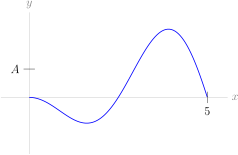

1
Below is the graph of a function \(y=f(x)\text{.}\) Its average value on the interval \([0,5]\) is \(A\text{.}\) Draw a rectangle on the graph with area \(\int_0^5 f(x)\,\dee{x}\text{.}\)

Recall that we are using \(\log x\) to denote the logarithm of \(x\) with base \(e\text{.}\) In other courses it is often denoted \(\ln x\text{.}\)
Below is the graph of a function \(y=f(x)\text{.}\) Its average value on the interval \([0,5]\) is \(A\text{.}\) Draw a rectangle on the graph with area \(\int_0^5 f(x)\,\dee{x}\text{.}\)
Suppose a car travels for 5 hours in a straight line, with an average velocity of 100 kph. How far did the car travel?
A force \(F(x)\) acts on an object from position \(x=a\) metres to position \(x=b\) metres, for a total of \(W\) joules of work. What was the average force on the object?
Suppose we want to approximate the average value of the function \(f(x)\) on the interval \([a,b]\text{.}\) To do this, we cut the interval \([a,b]\) into \(n\) pieces, then take \(n\) samples by finding the function's output at the left endpoint of each piece, starting with \(a\text{.}\) Then, we average those \(n\) samples. (In the example below, \(n=4\text{.}\))
Suppose \(f(x)\) and \(g(x)\) are functions that are defined for all numbers in the interval \([0,10]\text{.}\)
Suppose \(f\) is an odd function, defined for all real numbers. What is the average of \(f\) on the interval \([-10,10]\text{?}\)
For Questions 16 through 18, let the root mean square of \(f(x)\) on \([a,b]\) be \(\displaystyle\sqrt{\frac{1}{b-a}\int_a^b f^2(x)\,\dee{x}}\text{.}\) This is the formula used in Example 2.2.6 in the text.
Find the average value of \(f(x) = \sin(5x)+1\) over the interval \(-\pi/2 \le x \le \pi/2 \text{.}\)
Find the average value of the function \(y= x^2\log x\) on the interval \(1 \le x\le e\text{.}\)
Find the average value of the function \(f(x) = 3\cos^3x + 2\cos^2x\) on the interval \(0\le x\le\frac\pi2\text{.}\)
Let \(k\) be a positive constant. Find the average value of the function \(f(x) = \sin(kx)\) on the interval \(0\le x\le \pi/k\text{.}\)
The temperature in Celsius in a 3 m long rod at a point \(x\) metres from the left end of the rod is given by the function \(T(x)=\frac{80}{16-x^2}\text{.}\) Determine the average temperature in the rod.
What is the average value of the function \(f(x)=\dfrac{\log x}{x}\) on the interval \([1,e]\text{?}\)
Find the average value of \(f(x)=\cos^2(x)\) over \(0\le x\le 2\pi\text{.}\)
The carbon dioxide concentration in the air at a particular location over one year is approximated by \(C(t) = 400+50\cos\left(\frac{t}{12}\pi\right)+200\cos\left(\frac{t}{4380}\pi\right)\) parts per million, where \(t\) is measured in hours.
Suppose measurements were only made at noon every day: that is, when \(t=12+24n\text{,}\) where \(n\) is any whole number between 0 and 364. Then the daily variation would cease: \(50\cos\left(\frac{(12+24n)}{12}\pi\right) = 50\cos\left(\pi+2\pi n\right) = 50\cos\pi=-50\text{.}\) So, the approximation for the concentration of carbon dioxide in the atmosphere might be given as
What is the relative error in the yearly average concentration of carbon dioxide involved in using \(N(t)\text{,}\) instead of \(C(t)\text{?}\)
You may assume a day has exactly 24 hours, and a year has exactly 8760 hours.
Let \(S\) be the solid formed by rotating the parabola \(y=x^2\) from \(x=0\) to \(x=2\) about the \(x\)-axis.
Let \(f(x) = x\text{.}\)
Calculate the root mean square of \(f(x) = \tan x\) over \(\left[-\frac{\pi}{4},\frac{\pi}{4}\right]\text{.}\)
A force acts on a spring, and the spring stretches and contracts. The distance beyond its natural length at time \(t\) is \(f(t) = \sin\left(t\pi\right)\) cm, where \(t\) is measured in seconds. The spring constant is 3 N/cm.
A car travels two hours without stopping. The driver records the car's speed every 20 minutes, as indicated in the table below:
| time in hours | 0 | 1/3 | 2/3 | 1 | 4/3 | 5/3 | 2 |
| speed in km/hr | 50 | 70 | 80 | 55 | 60 | 80 | 40 |
Let \(s(t) = e^t\text{.}\)
Consider the two functions \(f(x)\) and \(g(x)\) below, both of which have average \(A\) on \([0,4]\text{.}\)
Suppose the root mean square of a function \(f(x)\) on the interval \([a,b]\) is \(R\text{.}\) What is the volume of the solid formed by rotating the portion of \(f(x)\) from \(a\) to \(b\) about the \(x\)-axis?
As in Example 2.2.6, let the root mean square of \(f(x)\) on \([a,b]\) be \(\displaystyle\sqrt{\frac{1}{b-a}\int_a^b f^2(x)\,\dee{x}}\text{.}\)
Suppose \(f(x)=ax^2+bx+c\text{,}\) and the average value of \(f(x)\) on the interval \([0,1]\) is the same as the average of \(f(0)\) and \(f(1)\text{.}\) What is \(a\text{?}\)
Suppose \(f(x)=ax^2+bx+c\text{,}\) and the average value of \(f(x)\) on the interval \([s,t]\) is the same as the average of \(f(s)\) and \(f(t)\text{.}\) Is it possible that \(a \neq 0\text{?}\)
That is — does the result of Question 23 generalize?
Let \(f(x)\) be a function defined for all numbers in the interval \([a,b]\text{,}\) with average value \(A\) over that interval. What is the average of \(f(a+b-x)\) over the interval \([a,b]\text{?}\)
Suppose \(f(t)\) is a continuous function, and \(A(x)\) is the average of \(f(t)\) on the interval from 0 to \(x\text{.}\)
Suppose \(f(x)\) is a positive, continuous function with \(\lim\limits_{x \to \infty} f(x)=0\text{,}\) and let \(A(x)\) be the average of \(f(x)\) on \([0,x]\text{.}\)
True or false: \(\lim\limits_{x \to \infty} A(x) = 0\text{.}\)
Let \(A(x)\) be the average of the function \(f(t)=e^{-t^2}\) on the interval \([0,x]\text{.}\) What is \(\displaystyle\lim_{x \to \infty} A(x)\text{?}\)